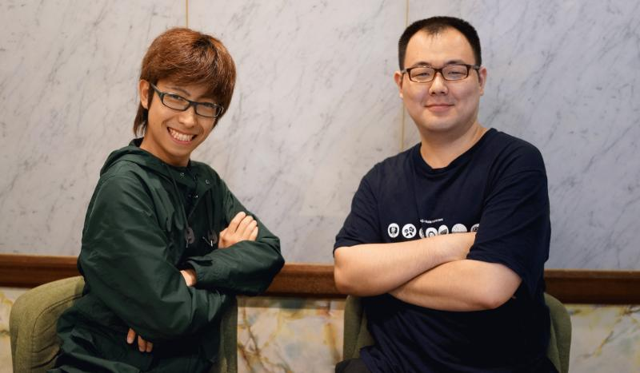
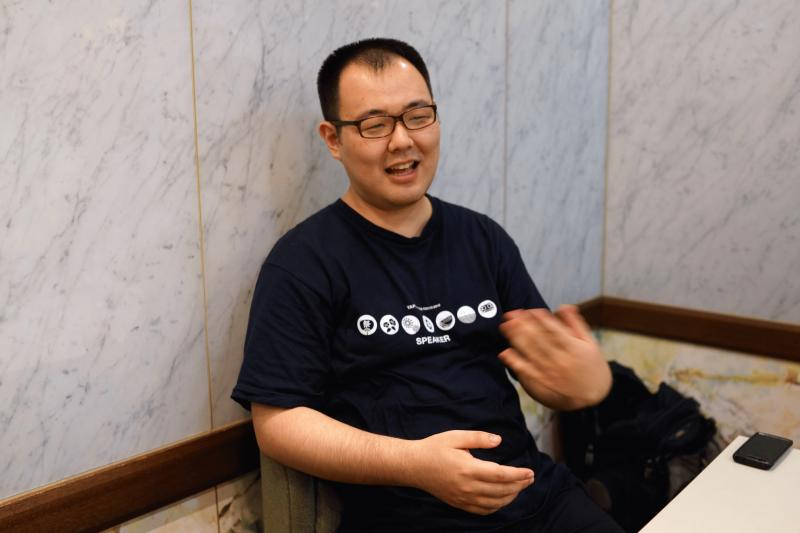
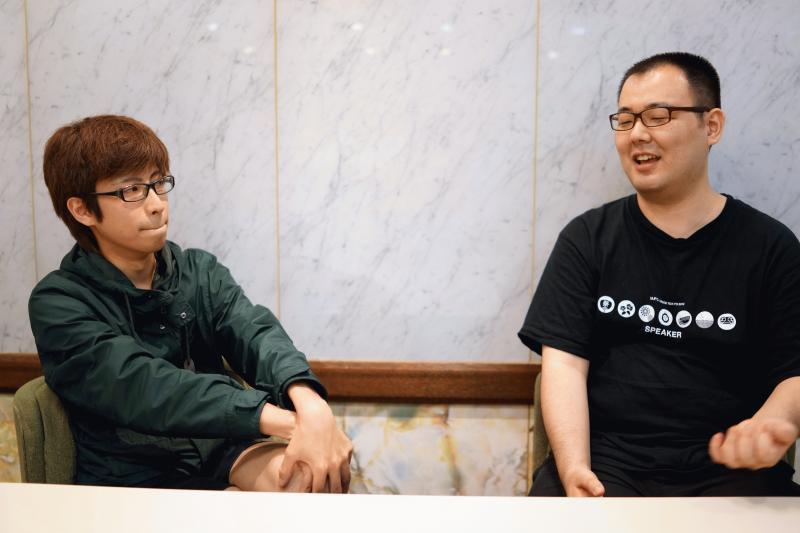
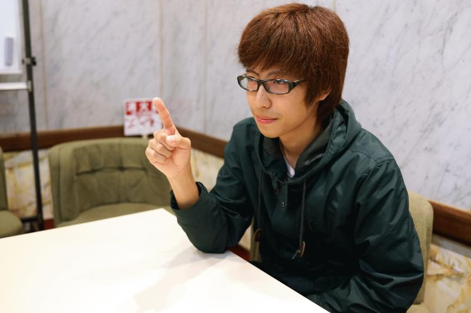

![Aug. 28, 29, 30 at KEIO Univ. Hiyoshi Campus [There Is More Than One Way To Enjoy It!]](../static/images/header_date_l.png)
This article Japanese only
こんにちは！YAPC実行委員長のわだです。 学生チケット販売を開始しました。 以下のチケットサイトで「学生チケット」をお申込みをいただき、当日学生証の提示で、 2日間通し券がなんと無料 です（ただし、Tシャツは付きません）。 学生の皆様奮ってご参加下さい。
さて、今回はその販売開始記念として、学生としてYAPC参加経験のある2人に「学生がYAPC::Asiaに参加する意義」をテーマにインタビューをしてみました。お話を伺ったのはCPAN Author（Perlライブラリ作者）でもあるパピックスさんとモズニオンさんです！

本日はお集まりいただきありがとうございます。まず、YAPC歴と簡単な自己紹介をお願いします。
パピックス 東工大学で行われた2011年のYAPC::Asiaに初めて参加しました。大学の学部4年生の時で、それから毎年行かせてもらっていますね。今は、大学の修士を出て上京。GaiaXという会社で働いています。
モズニオン 僕は今、東京の大学で修士2年生をやっています。アルバイトでプログラムを書いていたりします。Perl使ってます。最初のYAPCは2012年の東大が初めての参加です。
ちなみに二人とも最初のYAPCでは一般参加者という形でしたか？
パピックス 僕は当時「遠方からの参加者支援制度」というもので参加したので、その一環として短い5分程度の発表をしました。研究内容が中心だったと思います。
モズニオン 僕の場合、初めてのYAPC経験は特殊で、当初YAPCってみんな騒いでいるけどなんだろう？って思っていました。組み込みに近いようなプログラムを書いていたのでWebに明るくなかったんですよね。だから全然YAPCに行く気は無かったんです。そしたらヒョンなことからgihyo.jpさんのレポーターをやらないか？と言われて参加することになりました。で、行ってみたらYAPCってすげー熱気があるなーって感じました。今まで見たことがない異質な雰囲気を受けました。そしたら、さらに、ヒョンなことからLT（Lightning Talk、YAPC1日、2日目の最後に行なわれるそれぞれ5分の発表を矢継ぎ早に行う、ネタや笑いアリのYAPC::Asia名物コーナー）に飛び入り参加することになりました。
それ僕憶えてますよ（笑）
モズニオン そうなんですよ。ゆーすけべーさんに1日目が終わった後に「やれや」って言われたんで、強引に参加させてもらいました。小飼弾さんのサスペンダーを引っ張るというネタです（笑）それに限らず、YAPCは衝撃的でしたね。言い方が雑なんですけど「おじさんたちの文化祭」みたいな印象を受けました（一同笑）おじさん達がマジで大人の力を使って文化祭をやったらこうなるっていう。
パピックス お祭り感がありますね。ガチで真面目なトークもあれば、ふざけた部分もあったり、いろんなトークがあるなーと。Perlで8ビットゲームや音楽をつくったり、マインスイーパーを解いたりしたり... 僕はその時大学の研究でPerlを使っていて「Perlって言語がこんなに遊べるんだ！」そういう衝撃を受けて可能性を感じました。

じゃあ大学ではプログラムを書くと言ってもWebとは違うことをしていたの？
モズニオン 全く違いますねー。僕は地震学と信号処理を組み合わせた研究を主にやっています。
でもYAPCに参加するとWebの業界の話が多いでしょ？
モズニオン はい。最初僕Web全く分からなかったんですけど、そのあたりの技術や業界が「おーすげーな」と思いました。当時はソーシャルゲームの熱気があったのも影響があるかもしれませんね。
じゃあモズニオンは学生だけれども、今後社会人になるにあたってYAPCでの体験は活かされるのかな？
モズニオン 僕が持っている企業の人脈ってぶっちゃけそんな多くは無いんですよ。その中で、YAPCでトークする人が所属する会社さんとか、スポンサー企業とかそういうところと主にラフなお付き合いをさせてもらっています。たぶんYAPCに行っていなかったら、違う方面に傾いていたんだろうと。YAPC行ってなかったら、僕はこんな風になっていないっすよ（笑）
パピックス 僕も同じですよ！YAPCに行ってなかったらプログラマーじゃなくてSIerになっていたかもしれません。
モズニオン パピックスさんがSIerなら、僕はミュージシャンになっていたと思います（笑）
YAPCに行ってるってことは普段、Perl書いてるんだよね？
二人 はい！
モズニオン バカスカ書いてますね。アルバイトでも趣味でも。
パピックス 会社が今研修中なんですが、そこでバリバリ書いてますね。もちろん趣味として書くこともしますね。
みんな趣味でPerl書くことあると思うんだけど、あれってなんでやってるんだろうね？
モズニオン すごいアケスケに話すと「名声欲」みたいなのは明らかにありますよね。え、だって、これいいんじゃねって思って書いてGitHubでめっちゃスター付いたら嬉しいじゃないっすか。尚且つ普段の業務とかにも使えるようなものだったらみんな幸せになるじゃないっすか。その分、金曜日とか早く帰れるじゃないっすか。
パピックス CPAN Authorになってモジュールが使われるのも嬉しいですよね。僕は学校でただたんにPerlをやってるだけという時期があったんですけど、YAPCに参加してCPANの存在の大きさを感じて、頑張ろうって思ってCPAN Authorになりました。
モズニオン YAPCに行くと「そもそもCPAN Authorって実在したんだ」って気づきますね。 cpanm JSON って打つと「まかまか」って出るじゃないですか。この「まかまか」って人が日本人の方なんて僕は知らなかったですよ（笑） みたいな。で実際にそういうCPAN Authorの方とも会話も出来るというのが醍醐味ですね。

ライブラリ作者との近さがいいですよね
パピックス 僕が最初に参加したYAPCでは小飼弾さんが隣の隣に座っていたのを覚えていますね。「おーすげーこんな近くで会えるんだ」って思いました。antipopさんとかTAKESAKOさんとかと話したのも記憶に残っていますね。あと一番覚えているのはakiym君に会ったことですね。当時高校生の方です。
モズニオン ラリーやインギーがいて、ちょっとだけ喋れて、写真撮れたのがすげーなーみたいなのはありました。
学生だからこそ参加して嬉しい事あった？
モズニオン 学生でただ「研究室でプログラム書いています」という感じだと実務で要求される技術がイマイチ見えてこないことがあるじゃないですか。例えばDBのレプリケーションとはなんぞや？とか。ずっと研究室に引きこもっているとそういうのが分からないんですよ。で、いざ就職してそういうのが必要になった時に慌てて勉強しなくちゃいけなくなる。社会人になると時間が無くなるので、十分勉強できないかったり大変なんですよね。一方で学生は無限に近く暇なので、勉強出来るじゃないかなと。YAPCっていうのはそういうプラグマティックな話をする方々が多いのでそういうところは刺激になったと思いますね。キャッチーな言い方で言うと「普通の奴らの先をいく」みたいな！
ということは「普通の奴らの先をいく」ためにはYAPCに来いと...
モズニオン まぁ、そうです！（一同笑）
パピックス とりあえず行くだけでだいぶ変わりますからね！学校にいると「井の中の蛙」になってしまう。「大学の中で一番出来るわー」って思ってしまうし、僕もある程度そうだった。でもYAPCに来るとモズニオンさん、ゆーすけべー含めすごい人がたくさんいることが分かるんですよ。このままではいけないんだという意欲が湧きます。なので「俺プログラム出来るわ」って思っている学生はYAPC行った方がいいと思います。YAPC言ったら2度と「出来る」とか言えなくなるんじゃないでしょうかね（笑）ほんとに刺激をもらえる場所だと思いますね。
モズニオン 交友関係が雪だるま式に増えていくのもいいですよね。YAPCがそのトリガーになります。YAPC行くとだいたい日本中のPerl MongerやWebの技術者がいるじゃないっすか。「XXXさんいますか？」って聞くと「そこにいますよ」と連れてきてくれて、会話したりとか。「いつもBlog見てます」とかよくやります。
パピックス 初めての方ともYAPCという共通認識があるから話しやすいですからね。
モズニオン YAPCは誰かが「大いなる同窓会」とも言ってましたね。また、とある著名なハッカーは「弟に会いに行く」とも。それでいて、初対面の人と飲んだりもするのもいいですね。
パピックス RubyやPython、PHPとか多言語の人も参加しますし。
そろそろまとめに入りますね。YAPCが与えた影響をズバリお願いします。
モズニオン そうですねー。一言で言うと僕にWebを教えてくれた、って感じですかね。Webの熱気を感じました。

パピックス YAPCは僕の人生を変えた存在です。2011年に初めて参加して、Perl楽しいって思って、感想Blogに「Perlの会社へ行きます」って書いたんですよね。それくらいYAPCで得た刺激で人生観が変わったんですよ。何も分からないまま手探りでプログラムを書いていて、YAPCに来ることで方向性が固まった感じです。
最後の質問です。学生がYAPCに参加する意味を教えて下さい。
パピックス 新しい領域へのチャレンジ。だと思っています。学術にはない世界がYAPCにはあって、どちらの道に行くにせよ、見ておいた方がいいと思いますね。
モズニオン いやーまぁ、さっきも言いましたけど「普通の奴らの先を行く」につきますよ。僕は基本的に、鈍足なんで、先回りしないと先っている奴らに追いつけないし、後から来た人に追いつかれるし、そういう意味で、先回りするための場所なんです。
つまり「YAPCに来い」と（笑）
二人 安いですよ。ってか、学生無料ですからね！
ということで、パピックスさん、モズニオンさんありがとうございました。少しでも興味を持たれた方は学生チケット無料！なので是非ふるってご参加を。また、先行販売チケットの売り切れ間近＆個人スポンサーも募集中です。チケット販売ページはこちら！